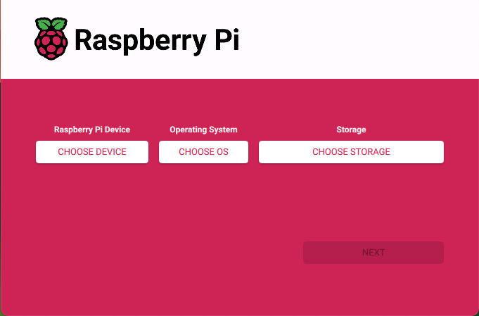
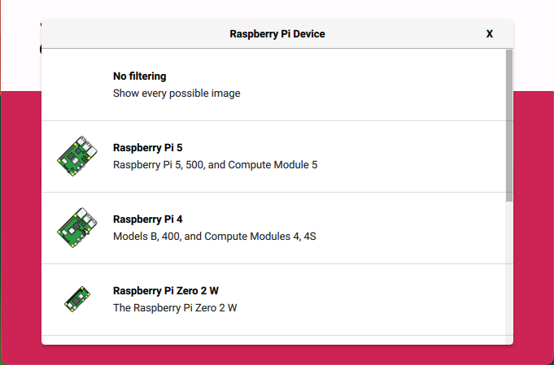
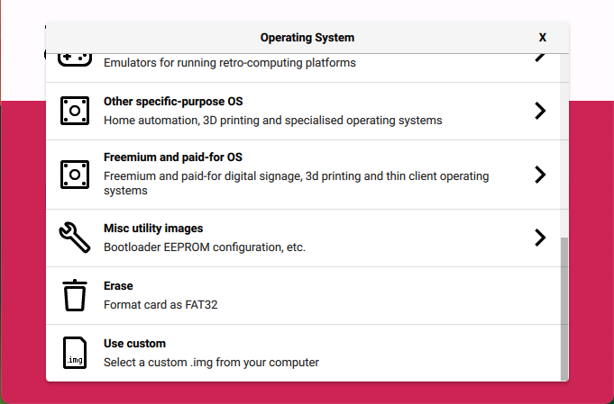
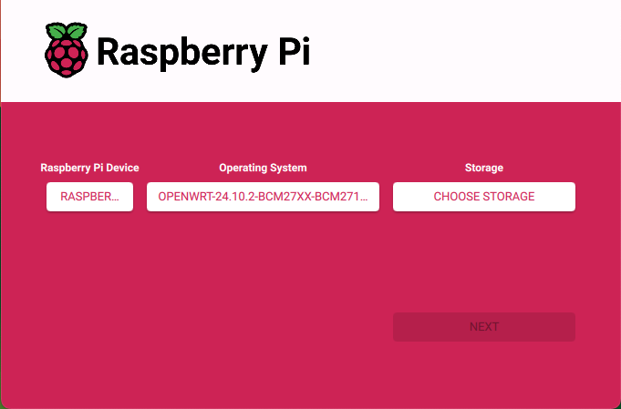
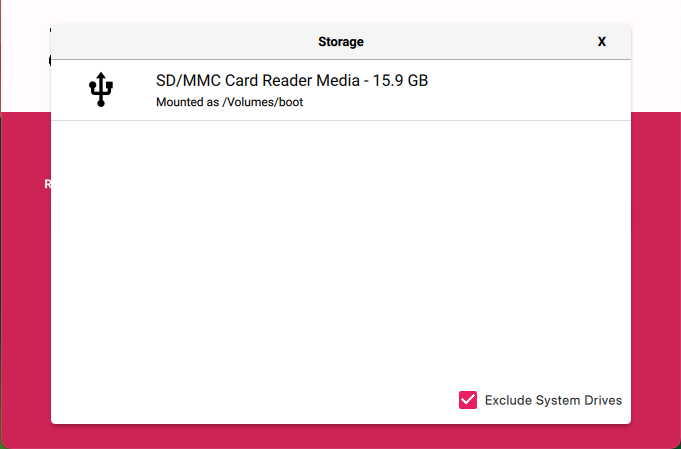
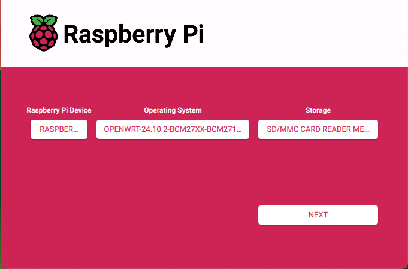
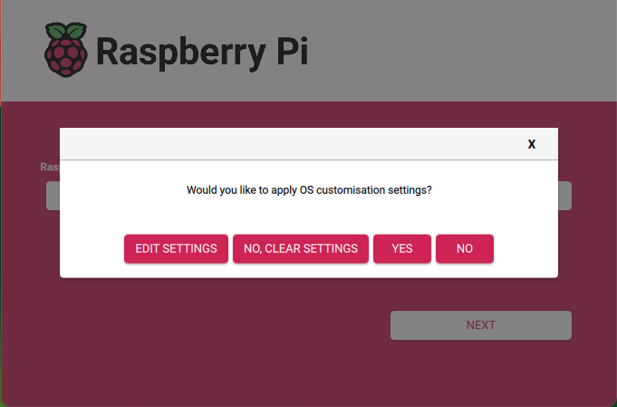
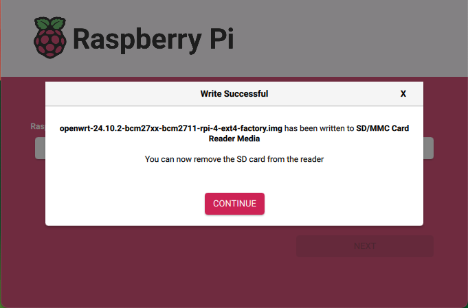

How to Configure SNACBox
New OpenWRT Setup
Compatible Hardware
Hardware Specifications
Min
CPU: 1GHz 64bit Dual Core Arm Cortex-A53
RAM: 1GB
SSD: 2GB SD Card
1 x Gigabit Ethernet Port
1 x USB A Gigabit Ethernet Dongle
Recomended
CPU: 1.5GHz 64bit Quad Core Arm Cortex-A72
RAM: 2GB
SSD: 8GB eMMC
2 x Gigabit Ethernet Port
Openwrt 25.12+ Supported Firmware
FriendlyArm NanoPi R3S - (Reboot before using.)
Waveshare Dual Gigabit CM4 Board
Waveshare USB Gigabit Eth Hat for Pi 4B
Click and download the firmware
Flash SD Card
Get an SD card (minimum 16 GB)
Download and install Raspberry Pi Imager https://www.raspberrypi.com/software/
Insert the SD card into a computer or adapter
Run Raspberry Pi Imager

Click "Select Hardware"

Choose Hardware
Click "Select OS"

Choose "Custom Image"

Click "Select Storage"

Choose SD Card

Click "No" to customise the OS

Click "Complete"

The SD card is now almost ready for use in the device.
Make sure your device is not connected to a network or power
Boot OpenWRT 25.12+
Insert the SD card into the device.
Power on or boot the device.
Connect the LAN port directly to a computer; the device will provide the computer with a new DHCP address.
Open a web browser on the computer and enter http://192.168.1.1 to access OpenWRT
Configure OpenWRT Password
SSH to root@192.168.1.1
ssh root@192.168.1.1
Connect the WAN port to the internet.
SNACBox Installation
The SNACBox APK package is built for OpenWRT 25.12+.
This package create SNACBox using a clean, fresh OpenWRT install.
It is not recommended to run this package on an existing OpenWRT installation, as it will overwrite firewall, network and AdGuardHome configurations.
Test the network first:
nslookup downloads.openwrt.org
apk update
Download the package:
wget --no-check-certificate https://github.com/AKrawczyk/SNACBox/raw/refs/heads/main/software/luci-app-snacbox-1.1.0-r1.apk
Install SNACBox package and reboot
apk add --allow-untrusted luci-app-snacbox-1.1.0-r1.apk
reboot
clear
After the box reboots, log in to https://192.168.12.1 and ssh root@192.168.12.1 to verify and complete the configuration.
The SNACBox is almost ready to be installed on a Home Network Router and provide safe internet.
Before using the SNACBox, make sure you set the system password.
Set and Configure System Password
- Go to 'System' -> 'Administration' -> 'Router Password'
- Enter a new password
- Press 'Save'
- Goto 'Webguard' -> 'AdGuardHome' -> 'Configuration'
- Press 'Enable Plugin'
SNACBox is ready to be set up for use on a home network.